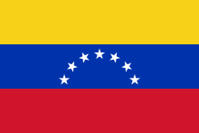
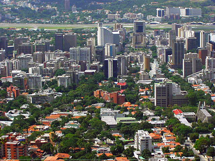
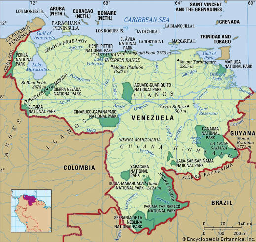

| Quick Facts | Home | Pictures | Information |
Geography and Urbanization
| Venezuela is a nation near South America's northernmost point. It
covers a roughly triangular region, greater than Germany and France put
together. Venezuela's borders are as follows: Guyana to the east, Brazil
to the south, Colombia to the southwest and west, and the Caribbean Sea
and Atlantic Ocean to the north. Caracas, the capital city, serves as
Venezuela's main hub for trade, industry, tourism, and education. Many Caribbean islands and archipelagos are under Venezuelan administration, including Margarita Island, La Blanquilla, La Tortuga, Los Roques, and Los Monjes. Venezuela has claimed authority over Guyanese territory west of the Essequibo River since the early 19th century. This territory is approximately 53,000 square miles (137,000 square kilometres), or roughly two-thirds of Guyana's entire geographical area. The determination of maritime borders in the Gulf of Venezuela and surrounding the Los Monjes archipelago has also been the subject of a protracted legal dispute between Venezuela and Colombia. np |
Flag of Venezuela |
|
 City in Venezuela |
Venezuela is a physiographically diverse country that includes the world's highest waterfall, Angel Falls, as well as the northern Andean mountain chains, interior highlands, and the majority of the Orinoco River basin with its vast plains, Lake Maracaibo, and other lakes. The republic has developed in a way that is distinct from other Latin American nations. However, these improvements were accompanied by disparities between the nation's regions and socioeconomic classes, and Venezuela's cities grew as a result of large-scale, mostly unregulated migration from rural areas and large-scale, mostly illegal immigration from Colombia and other neighbours. Like many other Latin American nations, Venezuela suffers from a high rate of urban poverty, a huge foreign debt, and pervasive corruption and political favouritism. Natural calamities like the floods that decimated parts of Caracas, La Guaira, and other coastal communities in late 1999 have made Venezuela's socioeconomic and political problems worse. However, compared to most other Latin American countries, the republic was more democratic and politically stable between 1958 and the early 21st century. Its economy also profited from a booming petroleum sector that took use of the greatest known oil reserves in the world. |
| The topography of Venezuela can be
broadly classified into three elevational divisions: the interior
forested uplands, with scattered peaks above 6,550 feet (2,000 metres),
the mountains, which reach elevations of approximately 16,400 feet
(5,000 metres), and the lowland plains, which rise from sea level to
about 1,650 feet (500 metres). Seven physiographic regions can be
identified within these broad divisions: the islands and coastal plains,
which include the Orinoco delta; the Lake Maracaibo Lowlands; the
northern valleys and hill ranges known as the Segovia Highlands; the
northwest valleys and hill ranges of the coastal mountain system; the
Llanos; and the Guiana Highlands. To the north are the islands and coastal lowlands. These comprise many peninsulas, such as the head-shaped Paraguaná in the northwest and Araya and Paria in the northeast, the latter of which is a finger of land pointing towards Trinidad, as well as the Caribbean "Islands to the Leeward," such as Margarita and La Tortuga. The coastal plains stretch eastward to the foothills of the coastal highlands, which are divided in the east by the Unare River basin, from the Colombian border and the Gulf of Venezuela. The Orinoco delta is further east and is largely divided by streams. It is a low, damp, and marshy region that served as an early entry point for people settling in the interior. It opens onto the Atlantic Ocean by a series of distributaries, or caños. |
 Map of Venezuela |
| Page 1 | Page 2 | Page 3 | Page 4 | Page 5 | Page 6 | Page 7 |